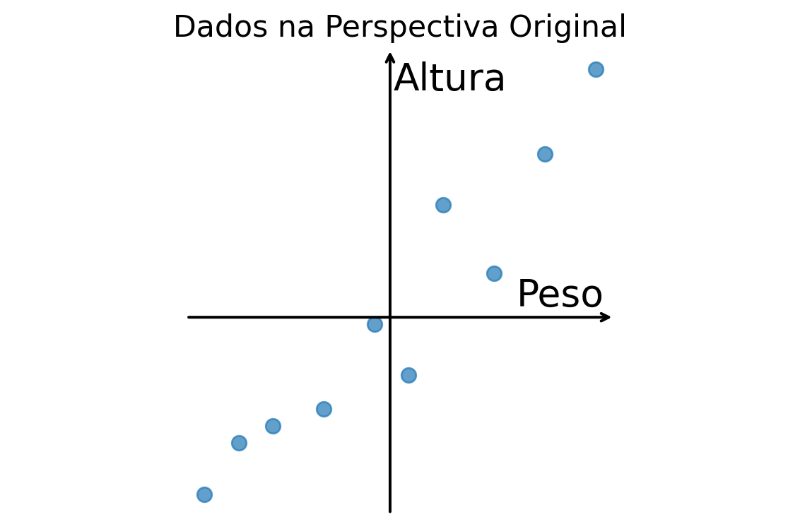
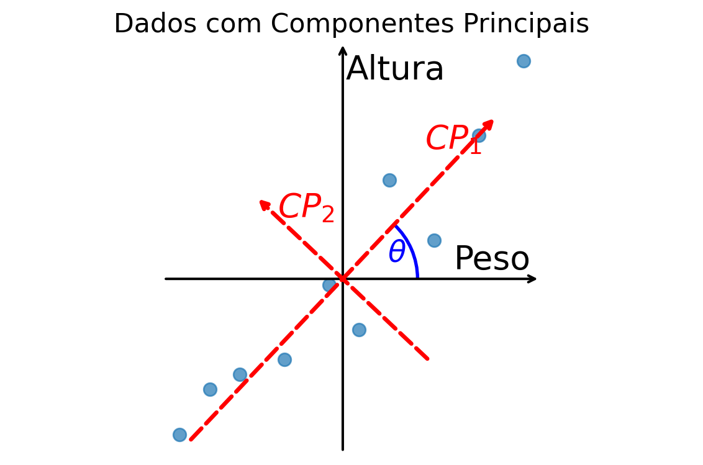
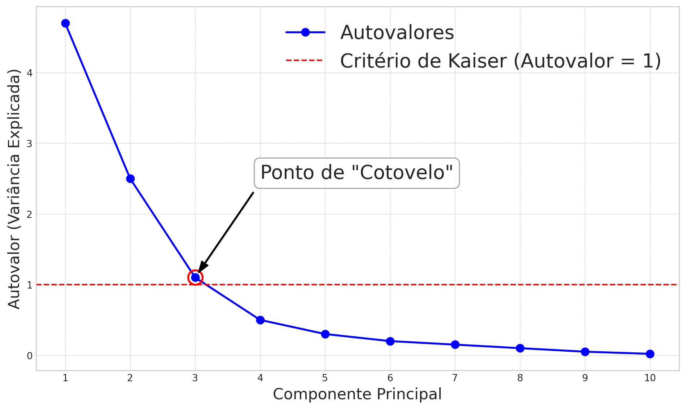
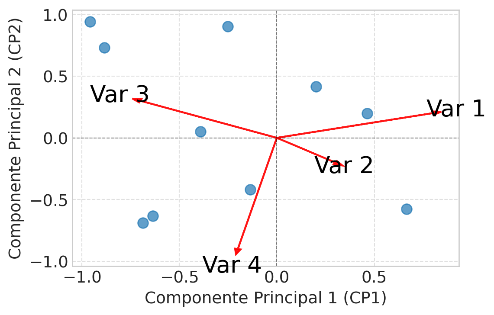

| Peso | Altura | |
|---|---|---|
| 65 | 170 | |
| 72 | 182 | |
| 58 | 165 | |
| 81 | 190 | |
| 75 | 178 | |
| 60 | 168 | |
| 68 | 175 | |
| 70 | 172 | |
| 78 | 185 | |
| 62 | 169 | |
| Média | 68.90 | 175.40 |
| Variância | 59.88 | 66.71 |
6 Análise de Componentes Principais
A Análise de Componentes Principais (ACP ou PCA do acrônimo em inglês) é uma técnica estatística multivariada que transforma um conjunto de variáveis possivelmente correlacionadas em um novo conjunto de variáveis não correlacionadas, chamadas de componentes principais. O objetivo primário da ACP é a redução de dimensionalidade: representar a variabilidade presente nos dados originais com um número menor de variáveis, minimizando a perda de informação.
Cada componente principal é uma combinação linear das variáveis originais. O primeiro componente principal é construído para capturar a maior variabilidade possível nos dados. O segundo componente principal, ortogonal ao primeiro, captura a maior parte da variabilidade restante, e assim por diante. Ao final, o número de componentes principais é igual ao número de variáveis originais, mas a expectativa é que os primeiros componentes concentrem a maior parte da informação relevante.
Geometricamente, a ACP é uma projeção do espaço original de variáveis para um outro espaço com características mais interessantes: A variância dos dados é concentrada em direções especificas (os componentes principais) e não existem correlações entre os novos eixos.
Para construir a intuição geométrica, vamos começar com um exemplo simples, em duas dimensões.
Exemplo 6.1 Suponha que coletamos dados de duas variáveis, Peso (em kg) e Altura (em cm), de um grupo de 10 pessoas.
Ao plotarmos esses dados (já centralizados), obtemos a nuvem de pontos abaixo. O sistema de eixos em preto (Peso, Altura) é a nossa perspectiva padrão.

Observando o gráfico, notamos que a nuvem de pontos forma uma elipse inclinada, o que indica uma correlação entre Peso e Altura. Descrever os dados usando os eixos originais é perfeitamente válido, mas talvez não seja a forma mais eficiente. A maior parte da variabilidade ocorre ao longo de uma diagonal.
A ACP propõe uma rotação dos eixos para que eles se alinhem melhor com a estrutura dos dados. O resultado é um novo sistema de eixos, os Componentes Principais (\(CP_1\) e \(CP_2\)), como mostrado abaixo.

O primeiro componente, \(CP_1\), agora aponta na direção de maior “alongamento” da nuvem de pontos. O segundo, \(CP_2\), é perpendicular ao primeiro e aponta na direção de maior variabilidade restante. Encontramos uma nova perspectiva que descreve a estrutura dos dados de forma mais natural e eficiente.
Em casos com mais de duas variáveis (p > 2), a lógica se estende: O i-ésimo componente principal (\(CP_i\)) aponta para a direção de maior variabilidade, sob a restrição de ser ortogonal (não correlacionado) a todos os componentes anteriores, \(\text{Cov}[CP_j, CP_i] = 0 \, \forall \, j < i\).
Uma intuição geométrica para o problema é buscar o ângulo \(\theta\) de rotação do eixo das variáveis tal que a variância dos componentes seja máxima. Essa rotação é simples de ser observada nesse exemplo bidimensional (veja Figura Figura fig-pca).
6.1 Variância como Medida de Informação
A essa altura, você deve estar se perguntando: por que a direção do “maior alongamento” é a mais importante? Em estatística, a variância é frequentemente usada como uma medida de informação. Uma variável com alta variância indica que seus valores são bem espalhados, o que nos ajuda a diferenciar as observações. Se a variância fosse zero, todos os pontos seriam idênticos, não nos fornecendo nenhuma informação sobre suas diferenças.
A ACP utiliza essa ideia para encontrar os eixos mais informativos. Ao rotacionar o sistema de coordenadas, ela não altera a variabilidade total dos dados, mas a redistribui de forma inteligente.
Definição 6.1 A variância total de um conjunto de dados com \(p\) variáveis é a soma das variâncias de cada variável individual. Matematicamente, se \(\mathbf{x} = (X_1, \dots, X_p)'\) é o vetor de variáveis aleatórias com matriz de covariâncias \(\mathbf{\Sigma}\), a variância total é definida como:
\[ \text{Variância Total} = \sum_{j=1}^{p} \text{Var}(X_j) = \sum_{j=1}^{p} \sigma_{jj} = tr(\mathbf{\Sigma}) \]
Onde \(\sigma_{jj}\) é a variância da \(j\)-ésima variável e \(tr(\mathbf{\Sigma})\) é o traço da matriz de covariâncias (a soma dos elementos da diagonal principal). Essa medida representa a dispersão total na nuvem de pontos, somando a variabilidade em cada uma das direções dos eixos originais.
Exemplo 6.2 Voltando ao exemplo Exemplo exm-pca-geom, as variâncias das variáveis originais são:
- Variância do Peso: 59.88
- Variância da Altura: 66.71
- Variância Total Original: 126.59
Após a rotação, as variâncias ao longo dos novos eixos (os componentes principais) são:
- Variância de \(CP_1\): 123.55
- Variância de \(CP_2\): 3.04
- Variância Total dos Componentes: 126.59
Dois fatos cruciais se destacam:
- A variância total é conservada. A soma das variâncias é a mesma nos dois sistemas de eixos. Nenhuma informação foi perdida; o ponto de vista foi apenas alterado.
- A variância foi eficientemente redistribuída. O primeiro componente, \(CP_1\), agora concentra 97.60% da variância total. Isso significa que, se quiséssemos reduzir nossos dados de 2D para 1D, poderíamos manter apenas o \(CP_1\) e ainda reter a maior parte da informação original. Essa é a essência da redução de dimensionalidade com ACP.
6.2 A Formalização Matemática
Com a intuição geométrica estabelecida, podemos formalizar a Análise de Componentes Principais. O objetivo é transformar um conjunto de variáveis correlacionadas \(\mathbf{x} = (X_1, \dots, X_p)'\) em um novo conjunto de variáveis não correlacionadas, os componentes principais \(\mathbf{y} = (Y_1, \dots, Y_p)'\). Cada componente é uma combinação linear das variáveis originais:
\[ \begin{aligned} Y_1 &= e_{11}X_1 + e_{12}X_2 + \dots + e_{1p}X_p = \mathbf{e}_1' \mathbf{x} \\ Y_2 &= e_{21}X_1 + e_{22}X_2 + \dots + e_{2p}X_p = \mathbf{e}_2' \mathbf{x} \\ &\vdots \\ Y_p &= e_{p1}X_1 + e_{p2}X_2 + \dots + e_{pp}X_p = \mathbf{e}_p' \mathbf{x} \end{aligned} \]
Em notação matricial, a transformação pode ser escrita de forma compacta:
\[ \mathbf{Y} = \mathbf{E}' \mathbf{X} \tag{6.1}\]
Onde \(\mathbf{Y}\) é o vetor \(p \times 1\) de autovalores e \(\mathbf{E}\) é a matriz \(p \times p\) cujas colunas são os vetores de coeficientes \(\mathbf{e}_k\).
Esses componentes são construídos para satisfazer duas condições fundamentais:
- Variâncias Ordenadas: A variância do primeiro componente é a maior possível, a do segundo é a maior possível entre as direções não correlacionadas com o primeiro, e assim por diante. Ou seja, \(\text{Var}(Y_1) \ge \text{Var}(Y_2) \ge \dots \ge \text{Var}(Y_p)\).
- Não Correlacionados: Os componentes são ortogonais entre si, o que significa que \(\text{Cov}[Y_i, Y_k] = 0\) para todo \(i \neq k\).
6.2.1 O Problema de Maximização
O primeiro componente principal, \(Y_1 = \mathbf{e}_1'\mathbf{x}\), é a combinação linear com variância máxima. A variância de \(Y_1\) é dada por:
\[ \text{Var}(Y_1) = \text{Var}(\mathbf{e}_1'\mathbf{x}) = \mathbf{e}_1' \text{Var}(\mathbf{x}) \mathbf{e}_1 = \mathbf{e}_1' \mathbf{\Sigma} \mathbf{e}_1 \]
Onde \(\mathbf{\Sigma}\) é a matriz de covariâncias de \(\mathbf{x}\). Para evitar que a variância seja aumentada simplesmente inflando os coeficientes em \(\mathbf{e}_1\), impomos a restrição de que seu comprimento seja unitário, \(\mathbf{e}_1'\mathbf{e}_1 = 1\). Formalmente, o problema de maximização para o primeiro componente principal se torna:
\[ \begin{aligned} \max_{\mathbf{e}_1} \quad & \mathbf{e}_1' \mathbf{\Sigma} \mathbf{e}_1 \\ \text{sujeito a} \quad & \mathbf{e}_1' \mathbf{e}_1 = 1 \end{aligned} \]
Para maximizar a variância sujeita à restrição, utilizamos o método dos multiplicadores de Lagrange. A função a ser maximizada é:
\[ L(\mathbf{e}_1, \lambda_1) = \mathbf{e}_1' \mathbf{\Sigma} \mathbf{e}_1 - \lambda_1 (\mathbf{e}_1' \mathbf{e}_1 - 1) \]
Derivando em relação a \(\mathbf{e}_1\) e igualando a zero, obtemos:
\[ \frac{\partial L}{\partial \mathbf{e}_1} = 2 \mathbf{\Sigma} \mathbf{e}_1 - 2 \lambda_1 \mathbf{e}_1 = 0 \]
O que nos leva à equação fundamental de autovalores e autovetores:
\[ \mathbf{\Sigma} \mathbf{e}_1 = \lambda_1 \mathbf{e}_1 \]
Esta equação mostra que o vetor de coeficientes \(\mathbf{e}_1\) deve ser um autovetor da matriz de covariâncias \(\mathbf{\Sigma}\). Para encontrar a variância, pré-multiplicamos a equação por \(\mathbf{e}_1'\):
\[ \mathbf{e}_1' \mathbf{\Sigma} \mathbf{e}_1 = \lambda_1 \mathbf{e}_1' \mathbf{e}_1 \]
Como \(\text{Var}(Y_1) = \mathbf{e}_1' \mathbf{\Sigma} \mathbf{e}_1\) e a restrição é \(\mathbf{e}_1' \mathbf{e}_1 = 1\), temos:
\[ \text{Var}(Y_1) = \lambda_1 \]
Para maximizar a variância de \(Y_1\), devemos escolher o maior autovalor possível. Portanto, \(\lambda_1\) é o maior autovalor de \(\mathbf{\Sigma}\), e \(\mathbf{e}_1\) é o autovetor correspondente.
Nota
A matriz de covariâncias \(\mathbf{\Sigma}\) é, por construção, uma matriz simétrica e positiva semi-definida. Conforme discutido em sec-espectral, o Teorema Espectral garante que os autovalores de tal matriz são reais e não-negativos, e que seus autovetores correspondentes a autovalores distintos são ortogonais. Esta propriedade é fundamental para a existência e unicidade dos componentes principais.
Nota
A demonstração acima, utilizando multiplicadores de Lagrange, é uma maneira moderna e elegante de conduzir a derivação do problema de máximização. Uma abordagem clássica restringe a norma de \(e\) através do quociente,
\[ \text{Var}(Y_1) = \max_{e_1} \frac{\mathbf{e}_1' \Sigma \mathbf{e}_1}{\mathbf{e}_1' \mathbf{e_1}} \]
Este é um problema clássico na álgebra linear. Um teorema fundamental afirma que para qualquer matriz simétrica \(A\), o máximo da forma quadrática \(\mathbf{x}' A \mathbf{x}\), sujeito à restrição \(\mathbf{x}' \mathbf{x} = 1\), é o maior autovalor de \(A\). O vetor \(\mathbf{x}\) que atinge esse máximo é o autovetor correspondente. Como a matriz de covariâncias \(\mathbf{\Sigma}\) é simétrica, este teorema se aplica diretamente ao nosso problema.
6.2.2 Componentes Subsequentes
Uma vez encontrada a primeira direção de máxima variância, o segundo componente principal, \(Y_2 = \mathbf{e}_2'\mathbf{x}\), busca capturar o máximo da variabilidade restante, sob a condição de ser não correlacionado com \(Y_1\). A condição de componentes não correlacionados garante que a informação presente no segundo componente principal não é redundante com relação aquela já presente no primeiro. Formalmente, temos:
\[ Cov(Y_1, Y_2) = Cov(\mathbf{e}'_1 \mathbf{x}, \mathbf{e}'_2 \mathbf{x}) = \mathbf{e}_1' \mathbf{\Sigma} \mathbf{e}_2 \]
Como \(\mathbf{e}_1\) é o primeiro autovetor, temos \(\mathbf{\Sigma} \mathbf{e}_1 = \lambda_1 \mathbf{e}_1\), Assim:
\[ \mathbf{e}_1' \mathbf{\Sigma} \mathbf{e}_2 = (\lambda_1 \mathbf{e}_1)' \mathbf{e}_2 = \lambda_1 \mathbf{e}_1' \mathbf{e}_2 \]
Logo:
\[ Cov(Y_1, Y_2) = 0 \iff \mathbf{e}_1' \mathbf{e}_2 = 0 \]
Com essa condição bem definida, o problema para o segundo componente se torna:
\[ \begin{aligned} \max_{\mathbf{e}_2} \quad & \mathbf{e}_2' \mathbf{\Sigma} \mathbf{e}_2 \\ \text{sujeito a} \quad & \begin{cases} \mathbf{e}_2' \mathbf{e}_2 = 1 \\ \mathbf{e}_1' \mathbf{e}_2 = 0 \end{cases} \end{aligned} \]
A função Lagrangiana agora inclui dois multiplicadores, \(\lambda_2\) e \(\phi\):
\[ L(\mathbf{e}_2, \lambda_2, \phi) = \mathbf{e}_2' \mathbf{\Sigma} \mathbf{e}_2 - \lambda_2(\mathbf{e}_2' \mathbf{e}_2 - 1) - \phi(\mathbf{e}_1' \mathbf{e}_2 - 0) \]
Derivando em relação a \(\mathbf{e}_2\) e igualando a zero, temos:
\[ \frac{\partial L}{\partial \mathbf{e}_2} = 2\mathbf{\Sigma}\mathbf{e}_2 - 2\lambda_2\mathbf{e}_2 - \phi\mathbf{e}_1 = \mathbf{0} \]
Pré-multiplicando por \(\mathbf{e}_1'\):
\[ 2\mathbf{e}_1'\mathbf{\Sigma}\mathbf{e}_2 - 2\lambda_2\mathbf{e}_1'\mathbf{e}_2 - \phi\mathbf{e}_1'\mathbf{e}_1 = 0 \]
Sabendo que:
- \(\mathbf{e}_1'\mathbf{\Sigma} = \lambda_1\mathbf{e}_1'\)
- \(\mathbf{e}_1'\mathbf{e}_2 = 0\)
- \(\mathbf{e}_1'\mathbf{e}_1 = 1\)
A equação se simplifica a \(\phi = 0\). Substituindo \(\phi=0\) de volta na derivada, a equação se torna:
\[ \mathbf{\Sigma}\mathbf{e}_2 = \lambda_2\mathbf{e}_2 \]
Assim, \(\mathbf{e}_2\) é o autovetor de \(\mathbf{\Sigma}\) correspondente ao autovalor \(\lambda_2\). Como \(\lambda_1\) foi o maior autovalor, para maximizar a variância de \(Y_2\), \(\lambda_2\) deve ser o segundo maior autovalor. Este processo se generaliza para os componentes subsequentes.
Este processo continua: o \(k\)-ésimo componente principal (\(Y_k\)) é definido pelo autovetor \(\mathbf{e}_k\) associado ao \(k\)-ésimo maior autovalor \(\lambda_k\), garantindo que \(\text{Var}(Y_k) = \lambda_k\) e que todos os componentes sejam mutuamente não correlacionados.
É neste ponto que a conexão com a sec-espectral se torna explícita. A matriz \(\mathbf{P}\) (Equação eq-pca-matriz), cujas colunas são os autovetores da matriz de covariâncias \(\mathbf{\Sigma}\), é exatamente a mesma matriz \(\mathbf{P}\) da decomposição espectral \(\mathbf{\Sigma} = \mathbf{P}\Lambda\mathbf{P}'\). Além disso, \(\Lambda\) é uma matriz diagonal contendo a variância de cada componente principal. Logo, podemos obter todos os componentes principais de maneira prática e simultânea através da decomposição espectral.
6.3 A Importância do Pré-processamento dos Dados
A Análise de Componentes Principais é, em sua essência, uma análise de variabilidade. A forma como medimos essa variabilidade impacta diretamente o resultado. Dois pré-processamentos são cruciais: a centralização e o escalonamento.
6.3.1 Centralização
Na Análise de Componentes Principais (ACP), a centralização dos dados — ou seja, a subtração da média de cada variável — é uma etapa fundamental não apenas para o cálculo da matriz de covariâncias, mas também para a projeção dos dados nos componentes principais.
Ao projetar os dados em um componente \(\mathbf{e}_i\), é imprescindível que a projeção seja feita a partir dos dados centralizados, ou seja:
\[ Y_i = \mathbf{e}_i^𝑇(\mathbf{x} − \bar{\mathbf{{x}}}) \]
Esse detalhe é essencial porque os autovetores da ACP são obtidos com base na matriz de covariâncias, a qual descreve a dispersão dos dados em torno da média, e não em torno da origem. Se aplicarmos a projeção diretamente sobre \(\mathbf{x}\), sem subtrair a média, os componentes resultantes não representarão adequadamente as direções de maior variabilidade — e sim uma combinação da dispersão com a posição média dos dados.
Portanto, para que os componentes principais preservem a interpretação correta como combinações lineares que explicam a variância dos dados em torno do centro da nuvem de pontos, é indispensável que tanto o cálculo da matriz de covariâncias quanto a projeção dos dados utilizem os dados centralizados.
Importante
No contexto de ACP, é comum e prático denotar por \(\mathbf{x}\) o vetor de variáveis já centralizado. Utilizamos esse abuso de notação durante esse capítulo para simplificação do texto sem perda de generalidade.
6.3.2 Por que Escalonar? O Dilema da Covariância vs. Correlação
A Análise de Componentes Principais (ACP) é sensível à escala das variáveis. Se uma variável tiver uma variância numericamente muito maior que as outras — mesmo que apenas por causa da sua unidade de medida — ela poderá dominar os primeiros componentes principais.
Imagine incluir uma terceira variável no conjunto Altura/Peso: a renda mensal, medida em Reais. As variâncias poderiam ser aproximadamente:
- Altura: 80 cm²
- Peso: 60 kg²
- Renda: 4.000.000 (RS)²
Nesse cenário, a variância da Renda é milhares de vezes maior que a das outras variáveis. Se aplicarmos a ACP diretamente na matriz de covariâncias, o primeiro componente principal será fortemente direcionado pela Renda, mesmo que sua correlação com as demais variáveis seja baixa. Isso ocorre porque a ACP estará apenas “seguindo” a direção da variável com maior variância — não necessariamente a mais informativa.
Para evitar esse viés, escalonamos as variáveis: cada uma é dividida por seu desvio padrão. Isso padroniza todas para variância igual a 1. Ao fazer isso, estamos na prática realizando a ACP sobre a matriz de correlação \((\mathbf{R})\) em vez da matriz de covariâncias \((\mathbf{\Sigma})\).
Vantagem do escalonamento:
Usar a matriz de correlação “democratiza” a análise. Todas as variáveis começam com a mesma importância inicial (variância 1), e a ACP passa a capturar a estrutura de correlações, ao invés de ser enviesada pelas diferenças de escala.
Quando usar a matriz de covariâncias?
Somente quando todas as variáveis estão na mesma unidade de medida e possuem uma interpretação comparável. Por exemplo, comparar a temperatura em Celsius em diferentes regiões pode fazer sentido sem escalonamento. Fora isso, a matriz de correlação é geralmente a escolha mais robusta e segura.
6.4 Componentes Principais Populacionais vs. Amostrais
Até este ponto, discutimos os componentes principais em um contexto populacional, onde a matriz de covariâncias \(\mathbf{\Sigma}\) (ou correlação \(\mathbf{R}\)) e seus autovalores \(\lambda_k\) e autovetores \(\mathbf{e}_k\) são conhecidos. Na prática, quase sempre trabalhamos com uma amostra de dados. Nesse caso, não conhecemos os verdadeiros parâmetros populacionais e devemos estimá-los.
Os componentes principais amostrais são obtidos da mesma maneira, mas usando a matriz de covariâncias amostral \(\mathbf{S}\) (ou a matriz de correlação amostral \(\mathbf{R}\)). As quantidades resultantes são estimativas dos seus análogos populacionais:
- O \(k\)-ésimo autovalor amostral, \(\hat{\lambda}_k\), é uma estimativa de \(\lambda_k\).
- O \(k\)-ésimo autovetor amostral, \(\hat{\mathbf{e}}_k\), é uma estimativa de \(\mathbf{e}_k\).
- O \(k\)-ésimo componente principal amostral, \(\hat{Y}_k = \hat{\mathbf{e}}_k' \mathbf{x}\), é uma estimativa de \(Y_k\).
A teoria e a interpretação permanecem as mesmas. Para simplificar a notação, ao longo deste capítulo, omitimos o acento circunflexo (\(\hat{\phantom{a}}\)), mas é importante lembrar que, na aplicação prática, estamos sempre lidando com estimativas amostrais.
6.5 Escolhendo o Número de Componentes
A principal vantagem da ACP é a redução de dimensionalidade. Mas como decidimos quantos componentes (\(q < p\)) reter? A escolha de \(q\) envolve um trade-off entre a simplicidade (poucos componentes) e a fidelidade aos dados originais (muitos componentes). Não existe uma regra única, mas sim um conjunto de critérios que devem ser avaliados em conjunto.
6.5.1 Critério da Variância Explicada Acumulada
Este é o critério mais comum. Calculamos a proporção da variância total explicada por cada componente e acumulamos essa proporção.
\[ \text{Proporção da Variância por } CP_k = \frac{\lambda_k}{\sum_{j=1}^{p} \lambda_j} \]
Em seguida, escolhemos o menor número de componentes \(q\) cuja variância explicada acumulada atinja um limiar satisfatório, geralmente entre 70% e 90%. A escolha do limiar depende do contexto da análise.
6.5.2 Critério do Autovalor (Critério de Kaiser)
Proposto por Henry Kaiser, este critério sugere reter apenas os componentes cujos autovalores (\(\lambda_k\)) são maiores que 1. A intuição por trás dessa regra é mais clara quando a ACP é aplicada sobre a matriz de correlação. Nesse caso, as variáveis originais são padronizadas para ter variância 1. Um componente com autovalor (variância) menor que 1 está, portanto, explicando menos variabilidade do que uma única variável original. Reter tal componente não traria uma “economia” de informação”, tornando-o um candidato à exclusão.
6.5.3 Scree Plot (Gráfico de Cotovelo)
O Scree Plot, proposto por Raymond Cattell, é uma ferramenta visual que nos ajuda a identificar o número ideal de componentes. Ele é um gráfico de linha dos autovalores (variâncias dos componentes) em ordem decrescente.
Tipicamente, o gráfico mostra uma queda acentuada nos primeiros autovalores, seguida por um nivelamento gradual para os autovalores restantes. O ponto onde a curva “dobra” ou forma um “cotovelo” (elbow) é considerado o ponto de corte. A ideia é reter os componentes que aparecem antes do cotovelo, pois eles são os que contribuem mais significativamente para a variância total. Os componentes após o cotovelo formam o “cascalho” (scree) na base de uma montanha e são considerados “ruído”.

6.6 Interpretando os Componentes Principais
Uma vez que selecionamos o número de componentes a reter, o passo final é a interpretação. O que esses novos eixos, que são combinações de nossas variáveis originais, realmente significam?
Os coeficientes \(e_{kj}\) do autovetor \(\mathbf{e}_k\) são chamados de cargas (loadings) e representam o peso da variável original \(X_j\) na formação do componente \(Y_k\). Embora as cargas sejam importantes, a sua interpretação pode ser complicada, pois sua magnitude depende das unidades das variáveis originais.
Uma medida mais interpretável é a correlação entre os componentes principais e as variáveis originais, \(Cor(Y_k, X_j)\). Ela nos diz o quão “alinhado” um componente está com cada variável original, numa escala padronizada de -1 a 1. A fórmula para essa correlação é:
\[ Cor(Y_k, X_j) = \frac{e_{kj} \sqrt{\lambda_k}}{\sqrt{s_{jj}}} \]
Onde:
- \(e_{kj}\) é a carga da variável \(j\) no componente \(k\).
- \(\lambda_k\) é o autovalor (variância) do componente \(k\).
- \(s_{jj}\) é a variância da variável original \(j\).
Quando a ACP é realizada sobre a matriz de correlação (ou seja, com dados padronizados), as variâncias \(s_{jj}\) são todas iguais a 1. Nesse caso, a fórmula simplifica para \(Cor(Y_k, X_j) = e_{kj} \sqrt{\lambda_k}\). As correlações se tornam proporcionais às cargas, facilitando a interpretação.
Além disso, quando a ACP é realizada sobre a matriz de correlações, as variáveis são padronizadas. Nesse caso, uma opção comum e direta é avaliar os próprios loadings (os autovetores da matriz de correlação) para entender a contribuição de cada variável. Um loading alto (próximo de 1 ou -1) indica que a variável tem uma forte influência na construção daquele componente.
A etapa mais crucial da ACP é transformar os eixos matemáticos (os componentes) em descobertas práticos. A ferramenta visual mais adequada para essa tarefa é o biplot. O termo “biplot” significa “dois plots” (plot duplo), pois ele sobrepõe duas informações em um único gráfico:
- Os scores: As coordenadas das observações no novo espaço dos componentes principais.
- Os loadings: As contribuições das variáveis originais para a criação desses componentes.
O resultado é um mapa rico que mostra não apenas como as observações se agrupam, mas por que elas se agrupam daquela maneira. A interpretação de um biplot segue uma lógica visual. Vamos quebrar em partes:
Eixos (Componentes Principais): O eixo horizontal é o CP1 e o vertical é o CP2. Eles são as “réguas” do nosso novo mapa e representam as direções de maior variabilidade nos dados. A porcentagem de variância que cada um explica é mostrada nos seus rótulos.
Pontos (Observações): Cada ponto no gráfico é uma observação.
- Proximidade: Pontos próximos uns dos outros representam observações com perfis semelhantes (conforme capturado pelos dois primeiros CPs).
- Agrupamentos: Grupos de pontos (clusters) indicam subpopulações nos dados.
Vetores (Variáveis Originais): Cada seta (vetor) representa uma das variáveis originais.
- Direção: A direção da seta indica como a variável contribui para os dois componentes. Uma seta que aponta para a direita indica uma forte contribuição positiva para o CP1. Uma que aponta para cima, uma forte contribuição positiva para o CP2.
- Comprimento: O comprimento da seta é proporcional a quão bem a variável é representada no espaço 2D do biplot. Setas mais longas significam que a variável tem uma forte influência nos componentes mostrados e é bem representada no gráfico. Setas curtas são menos importantes para os dois primeiros CPs ou sua variabilidade está melhor explicada em outros componentes (CP3, CP4, etc.).
- Relações entre Variáveis: O ângulo entre os vetores nos informa sobre a correlação entre as variáveis originais.
- Ângulo pequeno (< 90°): As variáveis são positivamente correlacionadas.
- Ângulo de ~90°: As variáveis não são correlacionadas.
- Ângulo obtuso (> 90°): As variáveis são negativamente correlacionadas.
Relação entre Pontos e Vetores: Para entender o perfil de um ponto (ou grupo de pontos), projete-o ortogonalmente sobre os vetores das variáveis. Se a projeção de um ponto cai na direção de um vetor, aquela observação tem um valor alto para aquela variável. Se cai na direção oposta, tem um valor baixo.
Com essas regras em mente, vamos analisar um biplot genérico.
